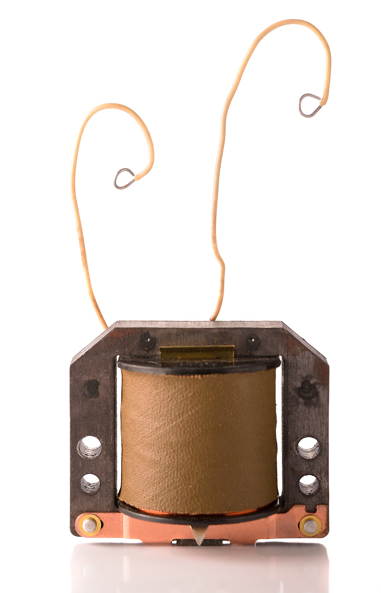

What is a Transformer?
A transformer is an electrical device that transfers electrical energy between two or more circuits through electromagnetic induction. It can change the voltage levels in alternating current (AC) circuits, either stepping up or stepping down the voltage.

Types of Transformers
Step-Up Transformer:
A step-up transformer increases the voltage from the primary coil to the secondary coil, making it suitable for long-distance power transmission.
Real-Life Example: Electric power stations use step-up transformers to increase voltage from 11 kV to 400 kV or higher for long-distance transmission.
Step-Down Transformer:
A step-down transformer reduces the voltage to a lower level, making it safe for use in household appliances.
Real-Life Example: Chargers for electronic devices like smartphones and laptops use step-down transformers to convert high voltage to lower levels for safe charging.
Isolation Transformer:
An isolation transformer electrically isolates the primary and secondary circuits. It ensures that no direct electrical connection is made, providing protection and safety.
Real-Life Example: Medical equipment like MRI machines use isolation transformers to prevent electrical shock and reduce interference.
Auto Transformer:
Auto transformers are used when the primary and secondary windings share a common coil, allowing for a more compact and efficient design. They are mostly used in motor applications.
Real-Life Example: In motor control systems in factories, auto transformers are used to reduce inrush current during motor startups.
டிரான்ஸ்ஃபார்மர் (Transformer)
வோல்டேஜை உயர்த்தும் டிரான்ஸ்ஃபார்மர் (Step-Up Transformer):
Step-up transformer பைரமரி கோயிலிலிருந்து இரண்டாம் கோயிலுக்கு மின்வோல்டேஜ் அளவை அதிகரிக்கும்.
உதாரணம்: மின்சார நிலையங்கள் step-up transformers ஐ பயன்படுத்தி மின்வோல்டேஜை 11 kV இலிருந்து 400 kV அல்லது அதற்கு அதிகமாக மாற்றி, நீண்ட தூரத்துக்கு மின்சாரம் செலுத்துகின்றன.
வோல்டேஜை குறைக்கும் டிரான்ஸ்ஃபார்மர் (Step-Down Transformer):
>
Step-down transformer மின்வோல்டேஜை குறைக்கின்றது, அதனால் வீட்டு சாதனங்களில் பாதுகாப்பாக பயன்படும்.
உதாரணம்: மின்சார சாதனங்களின் சார்ஜர்களில் step-down transformers பயன்படுத்தப்படுகின்றன, இது உயர்ந்த மின்வோல்டேஜை குறைந்த மின்வோல்டேஜுக்கு மாற்றுகிறது.
ஐசோலேஷன் டிரான்ஸ்ஃபார்மர் (Isolation Transformer):
Isolation transformer பைரமரி மற்றும் இரண்டாம் கோயிலுக்கிடையிலான மின்கட்டுப்பாட்டை தனிப்படுத்துகிறது, இது பாதுகாப்புக்கு உதவுகிறது.
உதாரணம்: மருத்துவ சாதனங்களில் isolation transformers பயன்படுத்தப்படுகின்றன, இது மின்சார ஷாக் மற்றும் இழப்பு குறைக்கும்.
ஆட்டோ டிரான்ஸ்ஃபார்மர் (Auto Transformer):
Auto transformer என்பது பைரமரி மற்றும் இரண்டாம் கோயிலின் சில இணைப்புகளைப் பகிர்ந்துகொள்கின்றது, இது சிறந்த வடிவமைப்பையும் திறமையான செயல்பாட்டையும் வழங்குகிறது.
உதாரணம்: தொழிற்சாலைகளில் மோட்டர் கட்டுப்பாட்டு முறைமைகளில் auto transformers பயன்படுத்தப்படுகின்றன, இது மின்வோல்டேஜின் அதிகமான துவக்க குரூப் நிலையைக் குறைக்க உதவுகிறது.